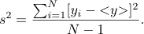

Introduction
The central limit theorem states that the average of of a sum of N random variables tends to a Gaussian distribution as N approaches infinity. The only requirement is that the variance of the probability distribution for the random variables be finite.
To be specific, consider a continuous random variable x with probability density f(x). That is, f(x)Δx is the probability that x has a value between x and x + Δx. The mean value of x is defined as
<x> = ∫x f(x) dx.
Similarly the mean value of x2 is given by
<x2> = ∫x2f(x) dx.
The variance σx2 of f(x) is
σx2 = <x2> - <x>2.
Now consider the sum yN of N values of x:
y = yN = (1/N)(x1 + x2 + … + xN).
We generate the N values of x from the probability density f(x) and determine the sum y. The quantity y is an example of a random additive process. We know that the values of y will not be identical, but will be distributed according to a probability density p(y), where p(y)Δy is the probability that the value of y is in the range y to y + Δy. The main question of interest is what is the form of the probability density f(y)?
As we will find by doing the simulation, the form of p(y) is universal if σx is finite and N is sufficiently large.
Method
Problems
f(x) = (1/π)(1/(x2 + 1),
where -∞ ≤ x ≤ ∞. Use symmetry arguments to show that <x> = 0. What is the variance σx? Do you obtain a Gaussian distribution for this case? If not, why not?

The reason for the factor of N - 1 rather than N in the definition of s2 is that to compute it, we need to use the N values of x to compute the mean of y, and thus, loosely speaking, we have only N - 1 independent values of x remaining to calculate s2. Show that if N >> 1, then s ≅ σy, where the standard deviation σy is given byσy2 = <y2> - <y>2.
References
Java Classes
Updated 2 May 2007.